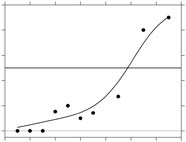

 |
Model-free estimation of a psychometric function |
|---|---|
| Home | Downloads | Demonstration | Documentation | Examples | Functions | Contacts |
|---|
MatLab. Download the package modelfree, unzip the file, and set the paths in Matlab to include all the folders of the software. This package requires the Statistics Toolbox.
R. To install, copy and paste the following in R (latest version of R required for the installation).
install.packages("PolynomF")
install.packages("SparseM")
install.packages("modelfree")
Seven examples used in the Publications can be downloaded in three formats: